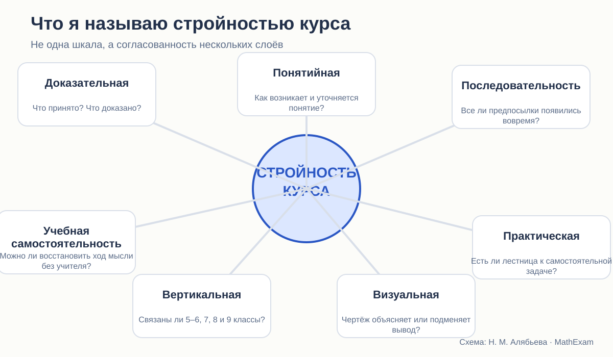
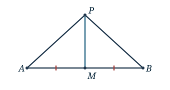

Стройность школьного курса геометрии · статья 1 из 12
Что значит «стройный курс геометрии»
Критерии, по которым можно сравнивать учебники, не сводя всё к вкусу и привычке.

Какие утверждения выдержат сдвиг вершины

Треугольник PAB. Точка M — середина основания AB.
На листе даны только треугольник PAB и середина M стороны AB. Можно ли назвать PM медианой? Высотой? Проведите отрезок от M к новой вершине P, расположенной прямо над A, и ответьте на те же вопросы.
Разбор для учителя
В обоих треугольниках AM = MB по определению середины. PM соединяет вершину с серединой противоположной стороны, значит, это медиана. Для высоты требуется прямой угол при M. На втором рисунке прямой угол образует PA с основанием AB, а PM наклонён к нему.
Ответ «на первом рисунке PM и медиана, и высота» стоит уточнить вопросом «Какое условие ты добавил бы в текст?». После изучения равнобедренного треугольника достаточно добавить PA = PB и сослаться на свойство медианы, проведённой к основанию. До изучения этой теоремы можно прямо задать PM ⟂ AB. По ответу видно, каким фактом ученик уже умеет пользоваться.
Почему я употребляю слово «стройность»
У школьного учебника может быть прекрасный набор задач, аккуратные рисунки и вполне правильные доказательства — и всё же курс может оставлять ощущение рассыпанности. Сегодня ученик выучил признак равенства треугольников, завтра применил его в трёх почти одинаковых задачах, а через месяц уже не узнаёт тот же признак в повёрнутом чертеже. При втором чтении приходится проверять, что именно позволило узнать признак в первом рисунке.
Бывает и обратная ситуация. Изложение выглядит очень строгим: определения, аксиомы, теоремы стоят на своих местах. Но шаг между предложениями слишком велик, происхождение вспомогательного построения не объяснено, а самостоятельные задачи начинаются сразу там, где кончается готовый образец. Такой курс математически собран, но педагогически хрупок.
Поэтому под стройностью я понимаю не красоту оглавления и не отсутствие опечаток. Стройный курс — это курс, в котором основания, понятия, доказательства, задачи и повторение образуют одну работающую систему. Ученик видит не только отдельные факты, но и то, откуда они следуют, зачем нужны и где применяются дальше.
Первый критерий: доказательная состоятельность
Это главный критерий. Геометрия в 7–9 классах — первая школьная дисциплина, где доказательство становится не редкой добавкой, а способом существования предмета. Речь при этом идёт прежде всего о планиметрической части курса: именно фигуры на плоскости несут в 7–9 классах основную доказательную нагрузку.
Для каждого существенного утверждения я проверяю четыре вещи:
- Каков его статус: определение, аксиома, теорема, следствие, наблюдение?
- На какие ранее установленные факты опирается доказательство?
- Не используется ли рисунок как незаявленная посылка?
- Рассмотрены ли все случаи, предусмотренные формулировкой?
Здесь важно не впадать в две крайности. Нельзя выдавать наглядное совпадение за доказательство. Но столь же неверно судить школьный текст так, будто перед нами университетский трактат по основаниям геометрии. Школьное сокращение допустимо, если пропущенный шаг однозначно восстанавливается из уже изученного. Логический пробел — другое дело: он требует нового основания, которого в курсе нет или которое появляется значительно позже.
При разборе конкретного доказательства я различаю следующие случаи.
| Что обнаружено | Как это понимать |
|---|---|
| Математическая ошибка | утверждение или вывод неверны |
| Логический разрыв | результат может быть верен, но из предъявленных оснований не следует |
| Скрытая аксиома | рассуждение корректно после явного добавления исходного положения |
| Схема доказательства | идея дана, часть шагов сознательно оставлена читателю |
| Допустимое сокращение | шаг уже подготовлен курсом и легко восстанавливается |
| Педагогическая трудность | математика верна, но ученик почти не получает средств понять ход мысли |
Такой словарь нужен, чтобы критика оставалась точной. Иначе любое сокращение можно объявить ошибкой, а любой привычный учителю переход — «очевидным».
Второй критерий: понятийная связность
Определение само по себе ещё не формирует понятия. Ученик может дословно воспроизводить, что параллелограмм — четырёхугольник с попарно параллельными противоположными сторонами, но не видеть, что прямоугольник, ромб и квадрат являются частными случаями параллелограмма.
Полный цикл работы с понятием включает:
- знакомый образ или задачу, из которой возникает необходимость нового слова;
- выделение существенных признаков;
- точное определение;
- примеры и контрпримеры;
- пограничные случаи;
- первое применение;
- возвращение к понятию в другом контексте;
- обобщение или уточнение.
Именно здесь особенно интересны различия трёх курсов. Атанасян часто начинает с наглядного и привычного действия. Погорелов стремится быстрее встроить понятие в систему основных свойств. Мерзляк заметнее организует учебный текст рубриками, примерами и уровнями задач. Но внешняя организация ещё не доказывает внутренней связности — её предстоит проверять по конкретным темам.
Третий критерий: последовательность зависимостей
Оглавление учебника — это не просто список тем. Это порядок, в котором разрешается пользоваться математическими фактами.
Например, если при доказательстве треугольник совмещают с другим, я ищу, где разрешено поместить его в нужное положение. Основанием может служить специально принятое свойство наложения. Отдельная теория движений в таком случае для раннего доказательства не требуется.
Для каждой темы я восстанавливаю порядок зависимостей.
исходное понятие → определение или аксиома → первая теорема → типовой приём → самостоятельная задача → дальнейшее применение.
Такой граф быстро показывает странности, которые в линейном чтении легко пропустить: тема введена, но нигде не работает; теорема активно применяется до объяснения; понятие переопределяется, но связь со старым смыслом не установлена.
Четвёртый критерий: обучение практике
В учебнике могут быть сотни задач и при этом отсутствовать путь от теории к самостоятельности.
Меня интересует не количество номеров, а размер учебного шага. После чтения доказательства ученик должен пройти несколько стадий:
- распознать знакомую конфигурацию;
- назвать нужный факт;
- применить его по прямой подсказке;
- выбрать факт без подсказки;
- соединить несколько утверждений;
- построить собственное доказательство;
- узнать тот же метод в новой конфигурации.
Между задачами «примените первый признак» и «докажите равенство отрезков» есть отдельная работа. Нужно самому выбрать два треугольника. Поэтому я смотрю, предлагает ли книга хотя бы один пример такого выбора без подсказанного названия теоремы.
Пятый критерий: роль чертежа и опыта
Хороший геометрический рисунок выполняет работу: удерживает обозначения, показывает взаимное положение элементов, помогает заметить вспомогательную конструкцию. Но он не вправе тайком становиться доказательством.
Особенно внимательно я буду рассматривать фразы:
- «из рисунка видно»;
- «очевидно»;
- «мысленно перегнём»;
- «наложим»;
- «аналогично»;
- «проведём» — когда существование нужного объекта ещё не обосновано.
Каждая из них может быть совершенно законной. И каждая может скрывать пропущенное основание. Решает контекст.
Шестой критерий: вертикальная преемственность
В 7 класс ребёнок приходит не с пустой головой. Он уже измерял отрезки и углы, строил фигуры, работал с окружностью, координатами, симметрией. Виленкин в 5–6 классах предлагает практические задания, наблюдения, измерения и перегибание бумаги. Это создаёт запас образов.
Но здесь есть важная граница. Предшествующий опыт объясняет, почему семикласснику понятна идея, но не всегда объясняет, почему она допустима как шаг доказательства.
Поэтому я буду проверять преемственность на трёх уровнях:
- термин действительно встречался раньше;
- ученик выполнял с ним действие;
- прежнего опыта достаточно для новой логической роли.
Седьмой критерий: возможность учиться по книге
Учебник рассчитан на урок с учителем, но всё же должен оставаться книгой, по которой можно восстановить пропущенный материал, повторить доказательство и проверить себя.
Здесь особенно интересен Погорелов: в тексте есть специальные советы, как читать доказательство по предложениям и проверять смысл каждого шага. У Мерзляка структура задачи и уровень сложности видны ещё до начала работы. Атанасян даёт более привычный школьный поток «теория — вопросы — задачи», где многое зависит от организации урока.
Для проверки можно закрыть строку после вспомогательного построения и попросить читателя по предыдущей строке объяснить её назначение.
Как сравнивать один шаг по трём книгам
Возьмём одну строчку из доказательства первого признака равенства треугольников. Второй треугольник уже нарисован. На каком основании первый можно поместить рядом с ним именно так, как требует доказательство?
- У Атанасяна сначала читаю о совмещении фигур на с. 11–13, затем возвращаюсь к наложению в доказательстве признака. Какой вершине и каким лучам должны соответствовать заданная вершина и стороны угла?
- У Погорелова открываю § 1, п. 10. Существование равного треугольника в заданном положении входит в число основных свойств. В доказательстве остаётся установить, почему его вершины попадут именно в вершины второго треугольника.
- У Мерзляка, Полонского и Якира нахожу в главе о треугольниках основное свойство равенства треугольников. Здесь надо следить и за лучом, на котором лежит сторона, и за полуплоскостью, в которой выбрана третья вершина.
Эту проверку можно повторить по разбору первого признака с фрагментами учебников. Порядок чтения составлен мной. Задание с медианой в начале статьи тоже авторское. Оно отвечает на другой вопрос: сумел ли ученик воспользоваться определением после изменения рисунка?
Так я читаю весь цикл. Для суждения о книге мне нужен конкретный переход и его основания. Для суждения о том, чему научился ребёнок, нужен его собственный ход решения.
Какие издания сравниваются
- Л. С. Атанасян и др. «Математика. Геометрия. 7–9 классы. Базовый уровень». 14-е переработанное издание, 2023. Печатное издание — ISBN 978-5-09-102538-5, по ссылке — электронная форма 2023 года.
- А. В. Погорелов. «Геометрия. 7–9 классы». Просвещение, 11-е стереотипное издание, 2022. ISBN 978-5-09-087755-8.
- А. Г. Мерзляк, В. Б. Полонский, М. С. Якир. «Геометрия. 7, 8, 9 классы». Сравнивается базовая линия.
- А. Г. Мерзляк, В. М. Поляков. «Геометрия. 9 класс. Углублённый уровень». Электронная форма, 2023. ISBN 978-5-09-108125-1. Книга входит в комплект для 7–9 классов.
- Н. Я. Виленкин и др. «Математика. 5 класс» и «Математика. 6 класс». Эти книги рассматриваются как предыстория систематического курса геометрии.
Ссылки ведут на официальные страницы издательства. Фрагменты страниц приведены в объёме, необходимом для методического и критического анализа; права на учебники и их оформление принадлежат авторам и издательствам.